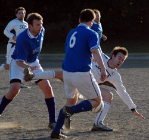
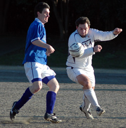

|
OiFuto dirt, Sun 8th January. Sala were left feeling a bit sorry for themselves after scraping a narrow 3v2 win over a plucky Geckoes team, when it emerged in post match debate, that no less than six Sala players had scored during the game. After lengthy dialogue with the referee however, it turned out that (unsurprisingly) at least three people had been lying. Although absent through suspension, Lenny claimed all six assists by séance before the mistake could be rectified and now rockets to the top of Sala's all time assist table with 118.
The reason for the confusion surrounding the goals was that neither team could muster enough gumption to cleanly send the ball over the goal line, until a strong header from a Geckoes' Rob Hughes in the last minute had Sala nervously glancing at the clock.

Sala, second best for much of the first half (despite facing a Geckoes team which was certainly under strength) somehow missed several clear chances and still went in three goals to the good.
Dhugal (playing in an unorthodox centre midfield partnership with Brookey, but having more chances than when he plays upfront) was first to go close, latching on to Brian's clever through ball, but his shot ricocheted off the keeper's legs. The same player then ran unchallenged from his own half, somehow making it straight through on goal. He clipped the ball past the keeper only for Gary Stout (who'd clearly watched Kung Fu Hustle' a few too many times) to acrobatically clear off the line. What Ron Atkinson would refer to as "a crowd scene " followed and the ball eventually broke to Brian on the edge of the box, but he could only watch as his low shot came back off the upright.
Next up, Toby made a similar run to Dhugal, beating his man on the left and cutting inside, his shot cum cross was blocked and after a brief melee, Brookey's shot squirmed through a pile of bodies and was at first saved and then helped into the net by the keeper. The first of many late Christmas presents on the day. 1v0.
The second goal was even more mystifying. Brookey's free kick was met, perhaps by Clarkey's head, perhaps Giles' or Toby's, maybe even Dhugal's, anyway it was on target and beat the keeper before being smashed into the roof of the net by Gecko Pete Exton on the back post. 2v0.
The third goal was so similar to the second that already memories of it have thankfully faded. Needless to say, it involved a stramash in the box and a shot that was helped into the net by a defender. Toby took the credit this time, but there were ugly murmurs of discontent in the showers after the game.
A rallying half time team talk, containing such maxims as keep the ball', don't let them back in' and kill the game', was largely ignored. Sala took to the pitch again and proceeded to give the ball away quite uniformly. They let the Geckoes back in as if they were a well liked and long absent uncle who arrives unexpectedly at the door with a pocket full of toffees. They killed the game as effectively as the hunter whom, finding himself face to face with a cute bunny rabbit, loses his nerve, takes it home, and gives it a carrot.

Anyway, shortly after the break, Andy Cross dropped a vicious in-swinging corner over the line, for the fourth own goal of the game. 3v1.
From that point on Sala were reduced to counter attacks, whilst Geckoes enjoyed the lion's share of possession and territory.
Sala still managed to fashion some clear chances though. From Toby's pass, Brookey dinked one over the onrushing keeper and unfortunately the bar as well. Dhugal blazed wide when well placed. Brookey thought too much about Gerrard's recent volley in Japan whilst shaping up to waywardly slice one of his own (later giving it the old "putting it back across the face of goal " excuse) from Brian's pinpoint cross. Shortly after that, Toby went clear as well but his chip ended up in the side netting.
In the later stages, an injured Gallagher came off, allowing Sid to make his outfield debut for the team, and an equally injured Guido was replaced by Martin, making a return to action after a baby induced hiatus.
As the minutes of the second half ticked by, the Geckoes had numerous close calls particularly from set pieces and corners, with the Sala defence under enormous pressure. They finally prevailed in the last minute, with Rob Hughes' firm but unchallenged header from a corner. 3v2
Geckoes must have wondered what they did wrong to come away with nothing, but if Sala had been a little more ruthless in front of goal, the game would have been well over before any comeback could have been staged.
As usual, Sala kept it giri-giri until the last kick of the game, but for once emerged with 3 much needed points, from a game that they didn't dominate.
The silver lining is that it's points and not performances that count at the end of the season.
Geckoes will surely be out for revenge when the two sides meet again in the cup in two weeks time.
Officially then, the goals were scored by Brookey, Clarkey and Toby, but you shouldn't believe everything you read...
Report - R Charles
|